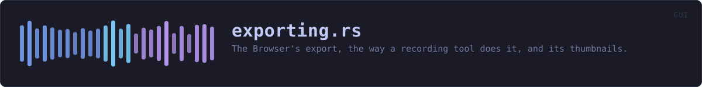

crates/veilvoice-gui/src/exporting.rs
veilvoice-gui · 626 lines · read the source here · or on GitHub
The Browser's export, the way a recording tool does it, and its thumbnails.
Roadmap item 175. The questions and the picture live in veilvoice_video::export and veilvoice_video::motion, where the command line can reach them too. This is the window's half: what the person has chosen, the worker that renders it, and a small picture of every recording in the list.
Nothing here runs on the thread that draws
A render is minutes and a thumbnail is a decryption. Both are started from the Browser and both finish on a worker (run and Thumbs::ask), which is the rule roadmap item 167 set for the whole window and a guard in crate::draw_path_tests holds it to.
The key is held for one recording at a time
The render takes the shared vault, loads one recording and lets go of it before anything else happens, exactly as the older export does (F-219). The thumbnails hold a std::sync::Weak rather than the vault itself: each recording is loaded through a strong reference that is dropped straight after, so shutting the vault while thumbnails are being drawn stops them at the next recording rather than keeping the key alive until the list ends.
Thumbnails are never written anywhere
They are pictures of the veiled audio, and they are still drawn from what is in the vault. They exist as textures while the vault is open and nowhere else: no cache on the disk, nothing that survives Thumbs::clear.
In plain words
The export button in the Browser: which kind of file, how good, how it looks, and then the work done in the background with a bar that counts the frames. And a little picture of each recording in the list, drawn in the same style the video will be.
WHAT THIS FILE CONTAINS
626 lines defining 13 functions (9 public), 4 types and 3 constants. Everything below is read out of the source, so it cannot disagree with the code.
The types it owns.
struct Choiceline 55 · Everything the person has chosen about an export.enum Outcomeline 93 · How a finished export reads: good, worth a second look, or failed.struct Jobline 103 · Everything one export needs, taken at the moment the folder was chosen.struct Thumbsline 353 · A small picture of every recording in the list.
What happens when it runs. These are the ways in: public, and nothing else in this file calls them, so they are what an outside caller reaches first.
Choice::use_templateline 83 · Start again from a template, keeping the file settings.reach_forline 127 · How far an export with this choice can say it has got.runline 184 · Do the export.
reachesrender,safe_stem,samples_of,wroteThumbs::getline 362 · The picture for a recording, once it has been drawn.Thumbs::pollline 376 · Take whatever pictures have arrived.Thumbs::askline 402 · Draw the pictures nobody has asked for yet, on a worker.
reachesclear,draw_thumbnails,samples_of
WHAT CALLS WHAT
The functions this file defines, and the calls between them. An edge means the callee's name appears, called, inside the caller's body. This is a syntactic reading, not a type-resolved one.
The same graph as Mermaid source
%%{init: {"theme":"base","themeVariables":{"background":"#1a1b26","primaryColor":"#1f2335","primaryTextColor":"#c0caf5","primaryBorderColor":"#7aa2f7","secondaryColor":"#16161e","tertiaryColor":"#16161e","lineColor":"#737aa2","textColor":"#c0caf5","mainBkg":"#1f2335","nodeBorder":"#7aa2f7","clusterBkg":"#16161e","clusterBorder":"#2f3549","fontFamily":"ui-monospace, SFMono-Regular, Consolas, monospace","fontSize":"14px"}}}%%
flowchart TD
n_default["Choice::default<br/>line 68"]
n_use_template(["Choice::use_template<br/>line 83"])
n_reach_for(["reach_for<br/>line 127"])
n_safe_stem["safe_stem<br/>line 139"]
n_samples_of["samples_of<br/>line 159"]
n_run(["run<br/>line 184"])
n_wrote["wrote<br/>line 269"]
n_render["render<br/>line 279"]
n_get(["Thumbs::get<br/>line 362"])
n_clear["Thumbs::clear<br/>line 368"]
n_poll(["Thumbs::poll<br/>line 376"])
n_ask(["Thumbs::ask<br/>line 402"])
n_draw_thumbnails["draw_thumbnails<br/>line 436"]
n_ask --> n_clear
n_ask --> n_draw_thumbnails
n_draw_thumbnails --> n_samples_of
n_run --> n_render
n_run --> n_safe_stem
n_run --> n_samples_of
n_run --> n_wrote
click n_default href "https://github.com/tilas01/veilvoice/blob/main/crates/veilvoice-gui/src/exporting.rs#L68" "open the source"
click n_use_template href "https://github.com/tilas01/veilvoice/blob/main/crates/veilvoice-gui/src/exporting.rs#L83" "open the source"
click n_reach_for href "https://github.com/tilas01/veilvoice/blob/main/crates/veilvoice-gui/src/exporting.rs#L127" "open the source"
click n_safe_stem href "https://github.com/tilas01/veilvoice/blob/main/crates/veilvoice-gui/src/exporting.rs#L139" "open the source"
click n_samples_of href "https://github.com/tilas01/veilvoice/blob/main/crates/veilvoice-gui/src/exporting.rs#L159" "open the source"
click n_run href "https://github.com/tilas01/veilvoice/blob/main/crates/veilvoice-gui/src/exporting.rs#L184" "open the source"
click n_wrote href "https://github.com/tilas01/veilvoice/blob/main/crates/veilvoice-gui/src/exporting.rs#L269" "open the source"
click n_render href "https://github.com/tilas01/veilvoice/blob/main/crates/veilvoice-gui/src/exporting.rs#L279" "open the source"
click n_get href "https://github.com/tilas01/veilvoice/blob/main/crates/veilvoice-gui/src/exporting.rs#L362" "open the source"
click n_clear href "https://github.com/tilas01/veilvoice/blob/main/crates/veilvoice-gui/src/exporting.rs#L368" "open the source"
click n_poll href "https://github.com/tilas01/veilvoice/blob/main/crates/veilvoice-gui/src/exporting.rs#L376" "open the source"
click n_ask href "https://github.com/tilas01/veilvoice/blob/main/crates/veilvoice-gui/src/exporting.rs#L402" "open the source"
click n_draw_thumbnails href "https://github.com/tilas01/veilvoice/blob/main/crates/veilvoice-gui/src/exporting.rs#L436" "open the source"
classDef entry fill:#1f2335,stroke:#7aa2f7,color:#c0caf5
class n_use_template,n_reach_for,n_run,n_get,n_poll,n_ask entry
classDef api fill:#1f2335,stroke:#7dcfff,color:#c0caf5
class n_safe_stem,n_samples_of,n_clear api
classDef helper fill:#1f2335,stroke:#bb9af7,color:#c0caf5
class n_default,n_wrote,n_render,n_draw_thumbnails helperThis site loads no third-party script, so it cannot run Mermaid; the diagram above is the same nodes and edges drawn by the generator instead. GitHub renders the source below directly.
ITEMS
| Item | Line | Documentation |
|---|---|---|
THUMB_WIDTH pub const | 49 | Width of a thumbnail, in pixels. |
THUMB_HEIGHT pub const | 51 | Height of a thumbnail, in pixels. |
Choice pub struct | 55 | Everything the person has chosen about an export. |
Choice::default fn | 68 | |
Choice::use_template pub fn | 83 | Start again from a template, keeping the file settings. |
Outcome pub enum | 93 | How a finished export reads: good, worth a second look, or failed. |
Job pub struct | 103 | Everything one export needs, taken at the moment the folder was chosen. |
NO_FRAMES pub const | 119 | Why no bar can be drawn for an export that has no picture. |
reach_for pub fn | 127 | How far an export with this choice can say it has got. |
safe_stem pub fn | 139 | A file name built from what somebody called a recording. |
samples_of pub fn | 159 | The samples and the rate of a canonical 16-bit WAV, mixed to one channel. |
run pub fn | 184 | Do the export. |
wrote fn | 269 | What a successful export says. |
render fn | 279 | Run ffmpeg, drawing and piping the frames when there is a picture. |
Thumbs pub struct | 353 | A small picture of every recording in the list. |
Thumbs::get pub fn | 362 | The picture for a recording, once it has been drawn. |
Thumbs::clear pub fn | 368 | Forget every picture. |
Thumbs::poll pub fn | 376 | Take whatever pictures have arrived. |
Thumbs::ask pub fn | 402 | Draw the pictures nobody has asked for yet, on a worker. |
draw_thumbnails fn | 436 | The worker behind Thumbs::ask. |